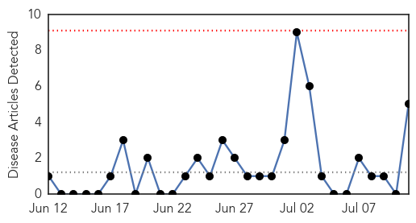
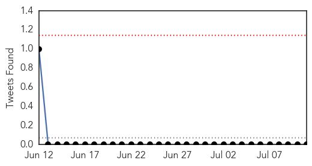
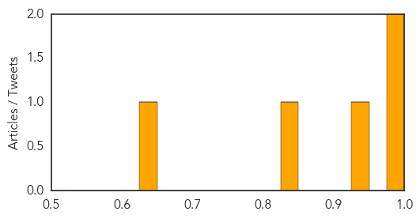

Dengue Fever
30-Day Web Trend
4 alerts, 5 warnings

30-Day Twitter Trend
4 alerts, 0 warnings

Article Locations
Article Confidences

Top Articles:
- 0.995
- Dengue Fever Vaccine May Soon Put an End to Painful Virus
- 0.980
- Illegals bring deadly threat
- 0.974
- Dengue Fever Vaccine Shows Some Promise in Trial
- 0.968
- Dengue threat around the corner as monsoon sets in
- 0.963
- Vaccine breakthrough gives hope to the millions of people at risk of and suffering from dengue fever
- 0.962
- Test vaccine for dengue seen as promising
- 0.950
- Dengue Fever Vaccination Shows Promise
- 0.906
- Third phase trial of dengue vaccine gives promising result
- 0.895
- Dengue Fever Vaccine is Promising in Early Trial
- 0.875
- First dengue vaccine hows promise
- 0.821
- Test vaccine for dengue promising
- 0.800
- Dengue on the rise Neglected areas are ideal places for Aedes to breed - Community
- 0.778
- Fewer dengue cases in Central Visayas for June-July
- 0.773
- Sarawak longhouse chiefs urged to join in anti-dengue fight
- 0.771
- Trial: Dengue shot offers some protection
- 0.769
- Malaysia General Business Sports and Lifestyle News
- 0.769
- Dengue Vaccine Offers Some Protection
- 0.762
- Moderate progress for dengue vaccine as number of cases passes 10,000 mark
- 0.738
- Iqtidar Gilani
- 0.737
- Steps for child, mother health
- 0.635
- Cost-effective solution for Govt - Nation
Top Tweets:
- 0.629
- Yes a vaccine for dengue fever would have a huge positive effect. Currently more than 1 mill. affected each year.
Swine Flu
30-Day Web Trend
0 alerts, 0 warnings

30-Day Twitter Trend
0 alerts, 0 warnings

Article Locations

Article Confidences
Top Articles:
- 0.999
- Flu season shows signs of waning; young and middle-aged adults have been hit hardest
- 0.982
- Lawmakers Say Migrant Children Are Diseased, Should Be Denied Shelter
- 0.926
- Large international study suggests flu drugs saved lives in 2009 H1N1 pandemic
- 0.833
- Tamiflu's effectiveness in cutting flu hospitalizations questioned
- 0.637
- Government Downplays Immigrant Disease Crisis
Top Tweets:
-
No tweets found for Jul 11, 2014